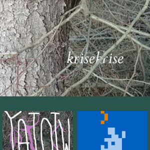

warrior princess wario says: "eat your greens, do a crime, hug your friends & lovers";
READ THE official WARIO WAREZ mission statement
company lore // MANIFEST
++ MERCHANDISE ++ BUY ++ MERCHANDISE ++ BUY ++ MERCHANDISE ++ BUY ++
interactive art published by warrorprincesswario
Your browser does not support the audio element 1
Your browser does not support the audio element 2
Your browser does not support the audio element 3
click here for audio version
\/ \/ \/ \/ \/
Interactive Art $$$$$ previous work

Some titles on this page use the OpenDyslexic font
https://opendyslexic.org/
SIL-OFL license